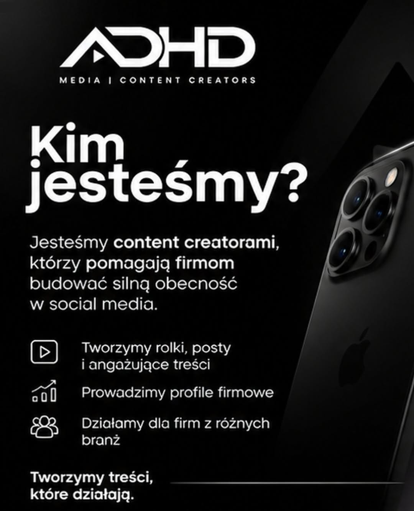
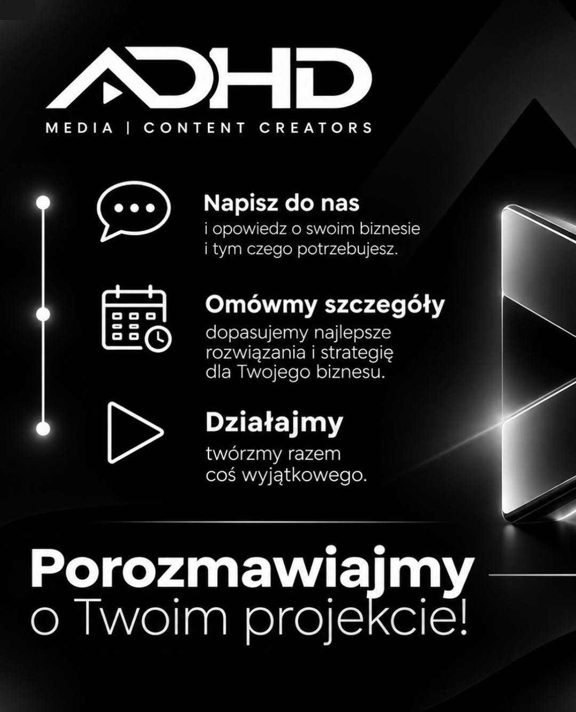
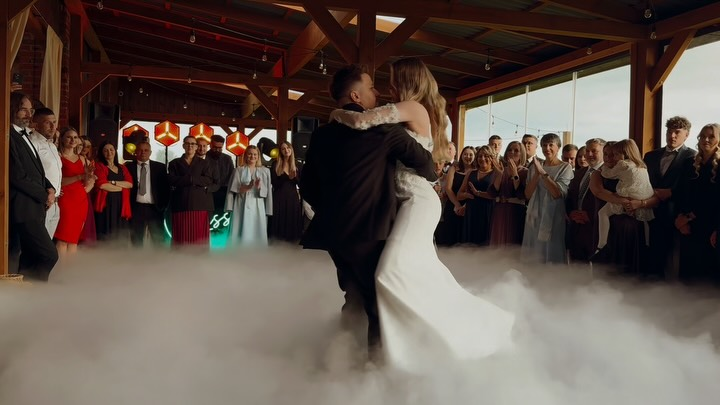
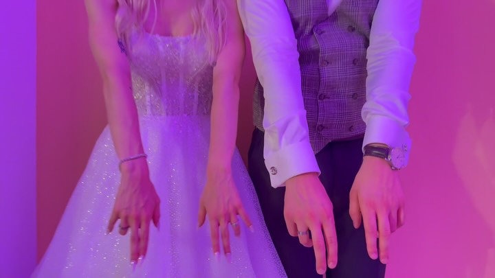
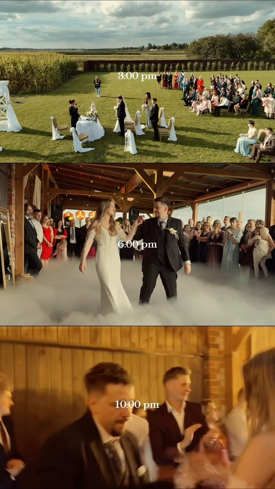

ADHD Creator Media i Make it REEL — przegląd profili
Jeden zespół, dwie osobne marki. Różne cele, różni odbiorcy — więc każdą opisuję osobno. Przy każdym poście widać, ile z możliwości jest wykorzystane, a ile leży odłogiem (opis i hashtagi).
Stan na 22.11.2026
Marka 1 · firmy / B2B
ADHD Creator Media
Content i marketing dla firm. Marka nowa, budowana od zera po rebrandingu.
Profile
Posty na Instagramie — co wykorzystane, co nie
Pasek opisu: użyte znaki z limitu 2200. Pasek hashtagów: użyte z 30 możliwych. Im więcej bieli, tym więcej niewykorzystanego miejsca.

„Jesteśmy zespołem kreatywnych twórców contentu, którzy pomagają firmom…"
Odwrotny problem: tekst „o nas" jest za długi na post — jego miejsce to opis profilu. Dodaj hashtagi.

Brak opisu
Puste pole: żadnego opisu ani hashtagu — post nie dotrze do nikogo poza obecnymi 4 osobami.

Brak opisu
Puste pole: to samo co wyżej — opis i hashtagi do dodania.

„Nie musisz mieć gotowego pomysłu, scenariusza… Od tego jesteśmy my!"
Dobry opis, 0 hashtagów: bez nich i tak nikt nowy go nie zobaczy. Dołóż 10–20 trafnych.

„🏡 Pokaż swoją inwestycję z zupełnie innej perspektywy!…"
Najlepszy z pięciu: jedyny z hashtagami. Dociągnij do ~15–20 i tak rób w każdym poście.
Co poprawić — ADHD Creator Media
- Ujednolicić opis Instagrama z Facebookiem i dodać numer telefonu.
- Każdy post z opisem i 10–20 trafnymi hashtagami (branża + region: #Tarnów, #rolki, #marketingdlafirm).
- Tekst „o nas" przenieść z posta do opisu profilu i wyróżnień.
- Stały rytm (np. 2–3 posty/tydzień) zamiast 5 postów w 3 dni.
- Logo / podpis na każdej rolce; zacząć zbierać opinie (na FB wciąż 0).
Marka 2 · śluby / eventy
Make it REEL
Wideo ze ślubów, wesel i eventów. Marka działająca, z realnym portfolio.
Profil
Ostatnie rolki — co wykorzystane, co nie
Profil żyje i ma odbiorców. Widać jednak, że hashtagi są prawie nieużywane — a to przy ślubach najtańszy zasięg do narzeczonych.

Krótki opis, 0 hashtagów. Dodaj lokalne: #ślub, #wesele + miejscowość.

To samo: dobra rolka, zero hashtagów = zasięg tylko do obecnych obserwujących.

Opis można rozbudować: para, miejsce, co oferujecie, zachęta do kontaktu.

Najlepszy opis z próbki — szkoda, że bez hashtagów. Dołóż 10–15.

Są hashtagi (4) — to dobry kierunek. Zwiększ do ~15 i rób tak za każdym razem.

Najnowsza rolka, a hashtagi wróciły prawie do zera. Ustal stały zestaw 15–20.
Co poprawić — Make it REEL
- Stały zestaw 15–20 lokalnych hashtagów do każdej rolki (#ślub, #wesele + region).
- Jeden schemat opisu: para, miejsce, co robicie, zachęta do kontaktu.
- Strona www + link w opisie z ofertą, cennikiem i kontaktem (teraz tylko wiadomości).
- Uporządkowane wyróżnienia i zbiorcze portfolio, nie tylko pojedyncze rolki.
- Konkretniejszy opis profilu: co, dla kogo, gdzie, jak się umówić.